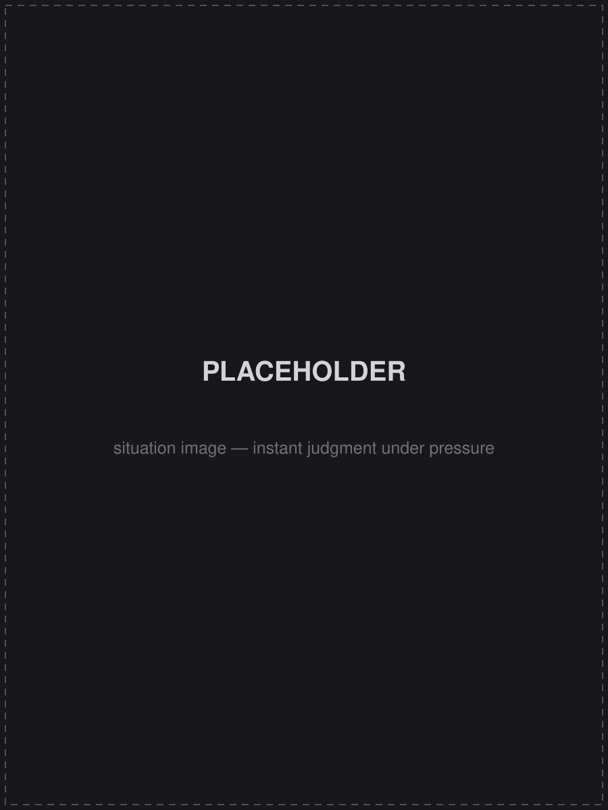
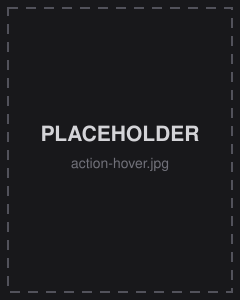
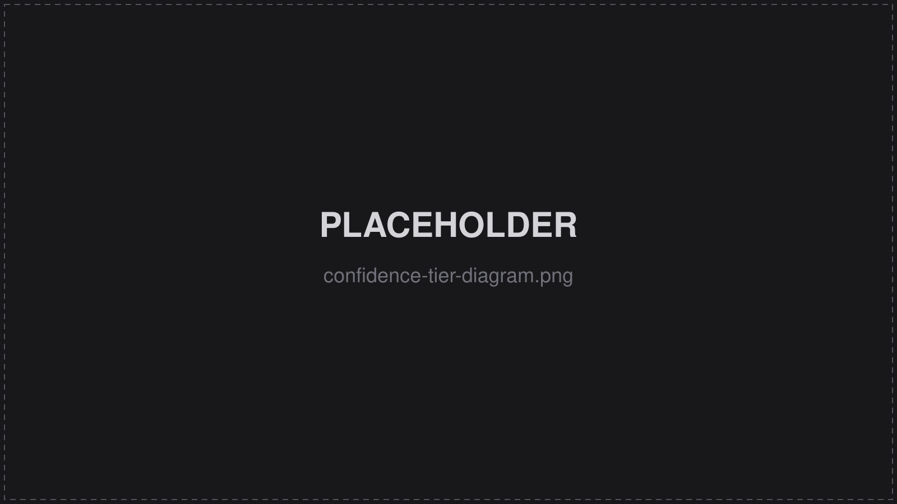

Case study / Endo AI
A self-directed project exploring what an AI agent for clinical logistics should look like — designed and built end to end, extending a constraint I ran into on a real traceability tool I led at Olympus.
Quick Info
Background
A few things to know before diving in.
1
The gap
Reprocessing and chain-of-custody data for medical scopes is only useful if it can be retrieved instantly, in plain language, by someone under time pressure — the exact problem the Olympus traceability tool solved for structured queries.
2
The constraint left open
That project deliberately left AI out of scope for its MVP, for real privacy and infrastructure reasons, but was designed to make room for a natural-language layer eventually.
3
The premise
Endo AI picks up that thread: what does that natural-language layer actually need to get right before it can be trusted in a clinical setting?
4
The approach
Rather than theorize, I designed the interaction model and built a working prototype myself — real interface, real database, real generated reports — to pressure-test the reasoning against an actual implementation.
The situation

A nurse doesn't think in questions, she thinks in reassurance
The obvious approach was a chatbot bolted onto the app. That framing didn't hold up. A head nurse managing scopes, rooms, and staff in real time isn't looking to query a database — she's asking one thing, over and over, in different forms: am I about to have a problem in the next twenty minutes. Designing for that meant giving the agent real clinical data to reason with — which immediately collided with the strictest constraint in the room: patient privacy.
The problem I set out to solve
How might we design an AI agent trustworthy enough for a clinical environment, when it can never see the patient data it's reasoning about?
The task
Design the interaction model for an agent that's useful everywhere and trusted immediately
The agent needed to be accessible from any screen in the app, aware of whatever the nurse was already looking at, but never boxed in by it — and it needed to earn trust on first contact, the same bar the Olympus tool had to clear, with none of the safety net a structured query wizard has by design.
The constraints
1
The agent's context could never contain patient identifiers directly — only de-identified references, resolved separately from the model entirely.
2
Proactive behavior (the agent volunteering information unprompted) carries real liability and cost implications, and had to be scoped deliberately narrow rather than open-ended.
3
Real-world reprocessing documentation has genuine gaps — not every step gets logged in the moment it happens — so the interface had to represent confidence honestly instead of presenting status as flat fact.
4
Any generated compliance document needed to carry the same honesty as the live interface — provenance couldn't quietly disappear once something became a PDF.
5
The system had to hold up as a working build, not just a design spec — every interaction pattern needed to survive actually being implemented against a real database.
The action
A small set of purpose-built components, each mapped to a decision, not a data type

The instinct to build one flexible chat surface didn't hold up. Instead, I designed a small registry of components, each one mapped to a specific moment of nurse decision-making — a status card for "can I proceed right now," a trace timeline for "can I prove what happened," an options card for a scheduling conflict with real tradeoffs. Restraint was the actual design language: no card tried to do more than one job well.
The hardest constraint — keeping patient identity out of the model's context entirely — required solving it on both sides of the conversation. The agent only ever receives de-identified references in anything it outputs. Free-text input needed the same discipline: a typed patient name resolves to an internal reference before a query ever reaches the model, not after.
Widgets in the system
The breakthrough
Reprocessing status isn't binary — it has real, nameable structure
The turning point wasn't a UI idea, it was realizing the underlying data problem had shape. A scope's documentation isn't simply "complete" or "incomplete" — it can be system-confirmed by a sensor, reasonably implied from a later step, self-reported by a nurse with no system record at all, or genuinely missing. Once that structure was named, the interface had an honest way to represent it — a flat checkmark would have been a lie of omission in a compliance-critical tool. Every card in the system, from a live status view to a generated PDF, carries that same four-tier distinction through to the end.

The result
A working prototype — real interface, real database, real generated reports
The system runs on a real backend, not a static mock: a live scope inventory, an agent built on a fixed set of typed tools rather than freeform generation, and report generation that produces actual downloadable files with real provenance data attached.
Every interaction pattern in this case study — the confidence tiers, the PII boundary, the editable elicitation flows — is implemented and running, not just specified.
Outcome
This started as a design question and became a working system
There's no launch metric here — this wasn't shipped to real users, and it isn't pretending to be. What's real: every hard constraint got an actual implementation, not just a diagram. What's still open: a manual reprocessing-logging flow that's designed but not yet wired into the live build, and a model upgrade from the fast, low-latency model used for prototyping to something more capable for genuinely ambiguous requests. Both are honest next steps, not gaps to talk around — they're where an interface like this has to hold up against real ambiguity rather than a clean demo path.